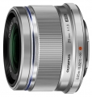
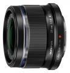

器材库 > APS画幅镜头 > M.ZD 25/1.8 ED

详细规格
镜头类型
标准镜头
发布日期
2014-02-20
焦距
25mm
等效35mm画幅焦距
50mm
最大光圈
f/1.8
最小光圈
f/22
视角（对角）
47度
镜头结构
9片/7组
非球面镜片
2片
光圈叶片
7片
最近对焦距离
25cm
最大放大倍率
0.12倍
驱动马达
MSC
滤镜口径
46mm
镜头卡口
Micro 4/3
防抖
否
颜色
银色, 黑色
尺寸
57.8 x 42mm
重量
137g
附件
镜头盖(LC-46), 镜头后盖(LR-2), 遮光罩(LH-49B), 装饰环(DR-49), 使用说明书, 国际保修卡
备注
选购：保护滤镜 (PRF-D46 PRO) 微距转接镜头 (MCON P-02)
该产品暂无存档的网友点评
产品图 / 样片
